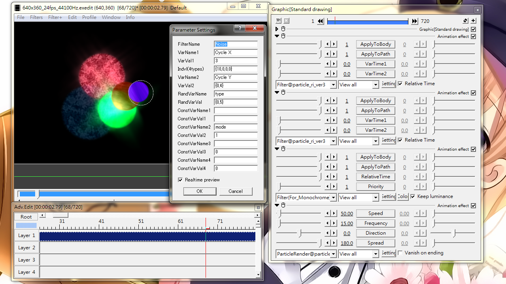
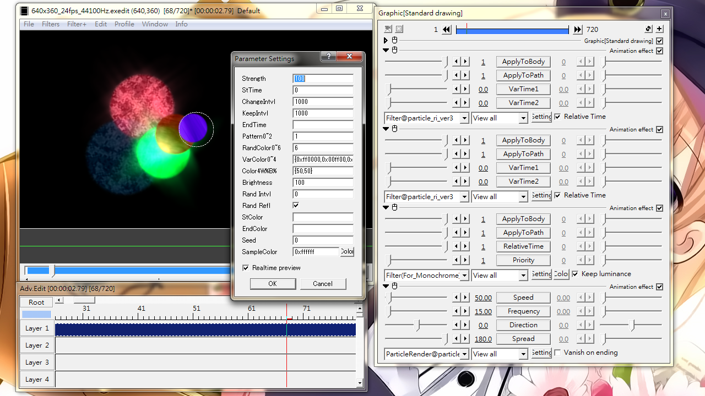

Fig08A: setting panel for Filter@particle_ri_ver3. The setting dialog on the left is pop-up from the first attached Filter@particle_ri_ver3. This particular example applies noise to each particle.

Fig08B: setting panel for Filter(For_Monochrome)@particle_ri_ver3. The setting dialog on the left is pop-up from the 3rd attached effect.
Filter
Applies AviUtl built-in filter to each particle.
Sliders
ApplyToBody
0: Do not apply filter to particle body
1: Applies filter to particle body
ApplyToPath
0: Do not apply filter to particle's tail
1: Applies filter to particle's tail
Effective only when Trajectory@particle_ri_ver3 is attached.
VarTime1
The time for VarName1 begins to change
Value in milliseconds
VarTime2
The time for VarName2 begins to change
Value in milliseconds
Check box
RelativeTime
Checked: Time zero is when a particle is emitted.
Unchecked: Time zero is the object's starting point.
Setting dialog
FilterName
The name of a AviUtl built-in filter
Different for Japanese and English version of Exedit
"Animation effect" cannot be used.
VarName1, VarName2
The parameter names of the filter that you want to change with time.
If you don't know the parameter name, create another object and cast that filter, then save the object as an alias. Open the EXA file with text editor and look for the names (left side of the equal sign)
VarVal1, VarVal2
Initial-Final value pairs for VarName1 and VarName2.
Input format: {initial,final,option}
option can be omitted. In such case: {initial,final}
If only a single number is given, it will be the same as {value,value}
When RelativeTime is checked, the initial value will be applied from the moment a particle is emitted until VarTime1(or 2). Then from VarTime1(or 2) to survival time, the value gradually change from the initial value to final value.
When RelativeTime is not checked, initial value will be applied from object starts until VarTime1(or 2). Then value gradually change to final value by object's end.
option is a value in milliseconds
When option is a positive value, it defines the time required for the transition from initial value to final value.
When option is a negative value, it takes -1*value seconds to go from initial to final, then it will take the same amount of time to go back to initial value. The value goes back and forth until object ends.
When only a single value is given, it is the same as {value,value}
RandVarName
A parameter that is to be randomized within a given range
RandVarVal
Defines the random value range for RanVarName: {minimun,maximum}
If only a single value is given, it is the same as {value,value} and gives no variation
To set the time interval between successive randomization event, use the form {min,max,millisecond}
To invoke randomization event when particle bounce back (i.e. using Bounce@ or Bounce2@), use the form {min,max,b} , where b is just a letter b.
Use the form {min,max,b,count} to enable transition from min to max in count number of bounce.
To change from min to max with respect to audio data (i.e. using with Sound@), use {min,max,o_a,coefficient} or {min,max,o_m,coefficient}. o_a adds volume data to coefficient while o_m use multiplication.
To divert particles to one of two predefined coordinates/types, use the form: {value1,value2,axis,lower_limit,upper_limit}, where axis is one of the letter x,y or z. When the x-coordinate of particle approaches lower_limit, value will set to value1. If it approaches upper_limit, value will set to value2.
ConstVarName#
A parameter that will not change value over time.
ConstVarVal#
The value for ConstVarName#. It can be number, text or check box state.
For text data, please enclose in double quotes
For check box state, 0= unchecked, 1=checked
Multi-stage variation
The above settings allow a one-stage transition from an initial value to a final value. However, it is also possible to have 2-stage and 3-stage transition.
To have 2-stage transition,
Place the same filter name into VarName1 and VarName2
Set stage 1 starting time using VarTime1
Set stage 2 starting time (same as stage 1 ending time) using VarTime2
Set stage 1 initial and final value pair at VarVal1
Set stage 2 initial and final value pair at VarVal2
To give 3-stage transition,
Enter filter name to VarName1
Set starts of stage 1 with VarTime1
Set starts of stage 2 with VarName2, value in milliseconds
Set starts of stage 3 with VarTime2
Set stage 1 value pair in VarVal1. The latter value will be the starting value of stage 2
Set the value at the end of stage 2, and the ending value of stage 3, in VarVal2
Filter(For_Monochrome)
A specialized facility for using the Monochromatic effect. It is different from Filter(in above section) that it keeps changing values on its own.
Sliders
ApplyToBody
0: Do not apply to particle bodies
1: Apply to particle bodies
ApplyToPath
0: Do not apply to particle tails
1: Apply to particle tails
RelativeTime
0: treat object start as zero time
1: treat particle creation as zero time
Priority
The order of applying this effect relative to other Filter@particle_ri_ver3 in the same object.
With reference to Fig08A and Fig08B, the first Filter@particle_ri_ver3 casts the Noise effect, the second one casts Glow, then Filter(For_Monochrome). Yet, since the Priority value is 1, it actually casts filters in the order: Monochromatic → Noise → Glow. If it were set to 2, the order would be: Noise → Monochromatic → Glow
Check box
Keep luminance
Checked: Maintain original perceivable brightness variation
Unchecked: Just a simple flood fill
Setting dialog
Strength
Same as the Strength slider in Monochromatic
StTime
The time when color starts to change, in milliseconds.
ChangeIntvl
The total duration of color change, in milliseconds.
KeepIntvl
The interval between the end of a change and the start of another round of change.
EndTime
The time after which color stop changing
Pattern0~2
0: The color of a particle is fixed on emission and unchanged through out survival time
1: Color of a particle will change in order after emission.
2: Color variation keep changing.
RandColor0~6
Define how color should be selected
0: color change in the order as defined in VarColor0~4
1: randomly select a color defined in VarColor0~4
2: Similar to 0, but add a bit random color shades
3: Similar to 1, but add a bit random color shades
4: Similar to 1, but add whiteness variation according to Color4W%B%
5: Color list is randomly generated
6: particles' base color is randomly chosen
VarColor0~4
A list of color hex-code for use when RandColor0~6 is 0~4
Color4W%B%
{White%,Black%}
Brightness
0 for almost black, 200 for almost white
Rand Intvl
The interval between successive random number change. In milliseconds.
Rand Refel
Randomize color on bounce when using with Bounce@ or Bounce2@